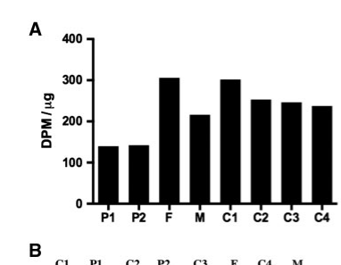

P4HA1 is the catalytic alpha-1 subunit of collagen prolyl 4-hydroxylase (C-P4H; EC 1.14.11.2), an endoplasmic reticulum-lumenal, Fe(II)- and 2-oxoglutarate-dependent dioxygenase. The active enzyme is an alpha2-beta2 heterotetramer in which the beta subunit is P4HB (protein disulfide-isomerase, PDI); the two catalytic alpha subunits provide the peptide-substrate-binding and Fe2OG dioxygenase domains, while P4HB acts as a structural subunit and retains the tetramer in the ER lumen through its C-terminal KDEL sequence (the alpha subunit lacks a retention signal). C-P4H catalyzes the post-translational formation of trans-4-hydroxy-L-proline from proline residues in -Xaa-Pro-Gly- sequences of procollagen and other proteins, consuming O2 and 2-oxoglutarate (which is decarboxylated to succinate and CO2) and requiring ascorbate (vitamin C) to maintain the active-site iron in the reduced state. 4-Hydroxyproline is essential for the thermal stability of the collagen triple helix, making this the key rate-limiting modification in collagen maturation and a central enzyme of collagen biosynthesis. Two enzyme isotypes exist (type I, with P4HA1, and type II, with the paralog P4HA2); the alpha-1 and alpha-2 subunits do not form mixed tetramers. P4HA1 is broadly expressed, with highest levels in collagen-producing tissues.
Definition: The hydroxylation of peptidyl-proline to peptidyl-4-hydroxy-L-proline, the direct biological process catalyzed by P4HA1 (corresponds to the existing term GO:0018401).
Justification: The existing BP annotations (collagen fibril organization) are downstream/indirect. The direct biological process performed by P4HA1 is peptidyl-proline hydroxylation to 4-hydroxy-L-proline (GO:0018401), which would more precisely capture its core process role; consider adding an involved_in annotation to GO:0018401 or a collagen biosynthetic process term.
| GO Term | Evidence | Action | Reason |
|---|---|---|---|
|
GO:0004656
procollagen-proline 4-dioxygenase activity
|
IBA
GO_REF:0000033 |
ACCEPT |
Summary: Phylogenetic (IBA) assignment of the core catalytic molecular function of P4HA1 as the alpha subunit of collagen prolyl 4-hydroxylase.
Reason: This is the defining, experimentally demonstrated molecular function of P4HA1; the IBA call is consistent with the direct IDA evidence (PMID:9211872) and EC 1.14.11.2.
Supporting Evidence:
file:human/P4HA1/P4HA1-uniprot.txt
Catalyzes the post-translational formation of 4-
|
|
GO:0016222
procollagen-proline 4-dioxygenase complex
|
IBA
GO_REF:0000033 |
ACCEPT |
Summary: P4HA1 is part of the alpha2-beta2 collagen prolyl 4-hydroxylase complex (alpha = P4HA1, beta = P4HB/PDI); phylogenetic assignment of complex membership.
Reason: The active enzyme is the alpha2-beta2 tetramer; P4HA1 is a constitutive catalytic subunit of this complex. Core cellular component.
Supporting Evidence:
file:human/P4HA1/P4HA1-uniprot.txt
Heterotetramer of two alpha-1 chains and two beta chains
|
|
GO:0030199
collagen fibril organization
|
IBA
GO_REF:0000033 |
KEEP AS NON CORE |
Summary: P4HA1-catalyzed 4-hydroxyproline formation stabilizes the collagen triple helix and is a prerequisite for proper collagen fibril formation; this is a downstream process role.
Reason: P4HA1 contributes indirectly to fibril organization by modifying procollagen, but fibril assembly itself is carried out by other machinery. The direct function is peptidyl-proline hydroxylation; this BP is a valid non-core involvement.
Supporting Evidence:
file:human/P4HA1/P4HA1-uniprot.txt
this tetramer catalyzes the formation of 4-hydroxyproline in collagen
|
|
GO:0004656
procollagen-proline 4-dioxygenase activity
|
IEA
GO_REF:0000120 |
ACCEPT |
Summary: Electronic assignment of the core procollagen-proline 4-dioxygenase activity, redundant with the IDA/TAS/IBA evidence.
Reason: Correct core molecular function; consistent with EC 1.14.11.2 and the experimental IDA annotation.
Supporting Evidence:
file:human/P4HA1/P4HA1-uniprot.txt
EC=1.14.11.2
|
|
GO:0005506
iron ion binding
|
IEA
GO_REF:0000002 |
ACCEPT |
Summary: P4HA1 binds one catalytic Fe(2+) per subunit in its Fe2OG dioxygenase domain; this cofactor binding is required for the dioxygenase mechanism.
Reason: Supported by the UniProt COFACTOR (Fe(2+), one per subunit) and the Fe-binding residues in the Fe2OG domain; a genuine, mechanistically essential molecular function.
Supporting Evidence:
file:human/P4HA1/P4HA1-uniprot.txt
Binds 1 Fe(2+) ion per subunit.
|
|
GO:0005783
endoplasmic reticulum
|
IEA
GO_REF:0000120 |
ACCEPT |
Summary: Electronic assignment of endoplasmic reticulum localization, the parent compartment of the documented ER lumen location.
Reason: Correct compartment; consistent with the UniProt ER lumen subcellular location and the IDA (HPA) ER annotation.
Supporting Evidence:
file:human/P4HA1/P4HA1-uniprot.txt
SUBCELLULAR LOCATION: Endoplasmic reticulum lumen.
|
|
GO:0005788
endoplasmic reticulum lumen
|
IEA
GO_REF:0000044 |
ACCEPT |
Summary: ER lumen localization derived electronically from the UniProt subcellular location vocabulary; this is the precise documented compartment for C-P4H.
Reason: Matches the curated UniProt subcellular location; the soluble tetramer acts in the ER lumen, retained there via the P4HB KDEL.
Supporting Evidence:
file:human/P4HA1/P4HA1-uniprot.txt
SUBCELLULAR LOCATION: Endoplasmic reticulum lumen.
|
|
GO:0016705
oxidoreductase activity, acting on paired donors, with incorporation or reduction of molecular oxygen
|
IEA
GO_REF:0000002 |
ACCEPT |
Summary: General oxidoreductase/dioxygenase activity term, a parent of the precise procollagen-proline 4-dioxygenase activity, reflecting incorporation of molecular oxygen.
Reason: Correct and consistent with the 2-oxoglutarate/O2-dependent dioxygenase mechanism; the more specific GO:0004656 captures the precise core function.
Supporting Evidence:
file:human/P4HA1/P4HA1-uniprot.txt
L-prolyl-[collagen] + 2-oxoglutarate + O2 = trans-4-hydroxy-L-
|
|
GO:0031418
L-ascorbic acid binding
|
IEA
GO_REF:0000002 |
ACCEPT |
Summary: C-P4H requires ascorbate (vitamin C) as a cofactor to keep the active-site iron reduced; L-ascorbic acid binding is a genuine cofactor-binding function.
Reason: Supported by the UniProt COFACTOR (L-ascorbate) and the Vitamin C keyword; mechanistically required and biologically central (collagen hydroxylation depends on vitamin C).
Supporting Evidence:
file:human/P4HA1/P4HA1-uniprot.txt
Name=L-ascorbate
|
|
GO:0005515
protein binding
|
IPI
PMID:17500595 Huntingtin interacting proteins are genetic modifiers of neu... |
KEEP AS NON CORE |
Summary: High-throughput huntingtin-interactome screen reporting a P4HA1-HTT interaction (IntAct P13674-P42858). Bare protein binding is uninformative and unrelated to the catalytic core function.
Reason: Records a real IntAct interaction also listed in UniProt, but the bare protein binding term gives no functional information and the HTT partner does not reflect P4HA1's collagen-hydroxylase role; per guidelines not elevated to core.
Supporting Evidence:
file:human/P4HA1/P4HA1-uniprot.txt
P13674; P42858: HTT
|
|
GO:0005515
protein binding
|
IPI
PMID:30021884 Histone Interaction Landscapes Visualized by Crosslinking Ma... |
KEEP AS NON CORE |
Summary: Crosslinking mass spectrometry of intact nuclei capturing a P4HA1 interaction (IntAct partner P4HA2/O15460). Bare protein binding from a high-throughput screen.
Reason: Uninformative bare protein binding term from a high-throughput XL-MS dataset; the partner is the paralog P4HA2 and the interaction does not inform the core catalytic function.
Supporting Evidence:
PMID:30021884
we use crosslinking mass spectrometry (XL-MS) to chart the protein-protein interactions in intact human nuclei
|
|
GO:0005515
protein binding
|
IPI
PMID:40205054 Multimodal cell maps as a foundation for structural and func... |
KEEP AS NON CORE |
Summary: Multimodal cell map (AP-MS/immunofluorescence in U2OS) reporting a P4HA1 interaction (IntAct partner P4HA2/O15460). High-throughput, uninformative bare term.
Reason: Bare protein binding from a proteome-scale interaction/imaging map; the paralog partner does not establish a specific function beyond the already-captured complex membership.
Supporting Evidence:
PMID:40205054
protein biophysical interactions and protein IF images for a matched set of more than 5,100 proteins in U2OS cells
|
|
GO:0042802
identical protein binding
|
IPI
PMID:24207127 The structural motifs for substrate binding and dimerization... |
KEEP AS NON CORE |
Summary: P4HA1 alpha subunits homodimerize via an antiparallel coiled-coil four-helix bundle in the N domain, an assembly step of the alpha2-beta2 tetramer; this is the structural basis of the identical protein binding (self-interaction) annotation.
Reason: A genuine, structurally demonstrated alpha-alpha homodimerization within the tetramer, but it is subsidiary to the informative catalytic core function and complex membership; retained as a non-core supporting attribute.
Supporting Evidence:
PMID:24207127
forming an extended four-helix bundle that includes an antiparallel coiled-coil dimerization motif between the two α subunits
|
|
GO:0016222
procollagen-proline 4-dioxygenase complex
|
IEA
GO_REF:0000107 |
ACCEPT |
Summary: Ortholog-based electronic assignment of membership in the procollagen-proline 4-dioxygenase (C-P4H) complex.
Reason: Correct; redundant with the IBA complex annotation. P4HA1 is a catalytic subunit of the alpha2-beta2 tetramer with P4HB.
Supporting Evidence:
file:human/P4HA1/P4HA1-uniprot.txt
Heterotetramer of two alpha-1 chains and two beta chains
|
|
GO:0005783
endoplasmic reticulum
|
IDA
GO_REF:0000052 |
ACCEPT |
Summary: Direct immunofluorescence (HPA) evidence for endoplasmic reticulum localization of P4HA1, consistent with its ER-lumenal site of action.
Reason: IDA-supported ER localization agrees with the curated ER lumen subcellular location.
Supporting Evidence:
file:human/P4HA1/P4HA1-uniprot.txt
SUBCELLULAR LOCATION: Endoplasmic reticulum lumen.
|
|
GO:0004656
procollagen-proline 4-dioxygenase activity
|
IDA
PMID:9211872 Cloning of the human prolyl 4-hydroxylase alpha subunit isof... |
ACCEPT |
Summary: Direct experimental characterization of the purified human prolyl 4-hydroxylase tetramer demonstrating procollagen-proline 4-dioxygenase activity (catalytic activity, kinetics, cofactor, inhibition by poly(L-proline)).
Reason: Core molecular function with direct (IDA) experimental support; this is the rate-limiting collagen-modifying activity of P4HA1.
Supporting Evidence:
PMID:9211872
Prolyl 4-hydroxylase (proline hydroxylase, EC 1.14.11.2) catalyzes the formation of 4-hydroxyproline in collagens.
|
|
GO:0016020
membrane
|
HDA
PMID:19946888 Defining the membrane proteome of NK cells. |
MARK AS OVER ANNOTATED |
Summary: P4HA1 was detected in a membrane-fraction proteomics screen of NK-like cells. P4HA1 is a soluble ER-lumenal protein, so a generic membrane localization most likely reflects co-fractionation of secretory/ER proteins with membrane preparations.
Reason: The documented, mechanistically meaningful localization is the soluble ER lumen; a bulk membrane-proteome HDA hit does not establish a credible membrane localization for this lumenal enzyme. The study itself notes many identified proteins are only transiently membrane-associated. Not removed (experimental data), but over-annotated and non-core.
Supporting Evidence:
PMID:19946888
The remaining species were largely involved in cellular processes and molecular functions that could be predicted to be transiently associated with membranes.
|
|
GO:0005788
endoplasmic reticulum lumen
|
TAS
Reactome:R-HSA-1650808 |
ACCEPT |
Summary: Reactome curation places P4HA1 in the ER lumen, where prolyl 4-hydroxylase converts collagen prolines to 4-hydroxyprolines.
Reason: Correct compartment; consistent with the curated UniProt ER lumen location and the enzyme's site of action.
Supporting Evidence:
file:human/P4HA1/P4HA1-uniprot.txt
SUBCELLULAR LOCATION: Endoplasmic reticulum lumen.
|
|
GO:0005788
endoplasmic reticulum lumen
|
TAS
Reactome:R-HSA-9918779 |
ACCEPT |
Summary: Reactome curation of P4HA1 ER lumen localization (proline hydroxylation context).
Reason: Correct compartment; redundant with the other ER lumen annotations and the UniProt subcellular location.
Supporting Evidence:
file:human/P4HA1/P4HA1-uniprot.txt
SUBCELLULAR LOCATION: Endoplasmic reticulum lumen.
|
|
GO:0004656
procollagen-proline 4-dioxygenase activity
|
TAS
PMID:2543975 Molecular cloning of the alpha-subunit of human prolyl 4-hyd... |
ACCEPT |
Summary: Traceable assertion (original cloning paper) of P4HA1 as the alpha subunit of the alpha2-beta2 prolyl 4-hydroxylase that catalyzes 4-hydroxyproline formation in collagens.
Reason: Core molecular function; the foundational cloning/characterization study supports the catalytic activity, consistent with the IDA evidence.
Supporting Evidence:
PMID:2543975
an alpha 2 beta 2 tetramer, catalyzes the formation of 4-hydroxyproline in collagens by the hydroxylation of proline residues in peptide linkages
|
|
GO:0005783
endoplasmic reticulum
|
TAS
PMID:2543975 Molecular cloning of the alpha-subunit of human prolyl 4-hyd... |
ACCEPT |
Summary: Traceable assertion of ER localization, inferred from the demonstration that the beta/PDI subunit retains the tetramer within the ER (the alpha subunit lacks a KDEL signal).
Reason: Correct compartment; the cloning paper established ER retention of the enzyme via P4HB, consistent with the curated ER lumen location.
Supporting Evidence:
PMID:2543975
necessary for the retention of a polypeptide within the lumen of the endoplasmic reticulum
|
Q: To what extent are the three P4HA1 splice isoforms functionally distinct in substrate preference or tissue-specific collagen hydroxylation, given that the alternatively spliced exon lies within the catalytic region?
Q: Do the high-throughput protein binding interactions (HTT; paralog P4HA2 cross-links) reflect any genuine biology, or are they incidental captures unrelated to the C-P4H catalytic function?
Experiment: Reconstitute the alpha2-beta2 C-P4H tetramer from purified recombinant P4HA1 and P4HB and measure 4-hydroxyproline formation on defined procollagen peptides as a function of Fe(2+), 2-oxoglutarate, O2 and ascorbate concentrations to quantify cofactor dependence.
Experiment: Isoform-resolved hydroxyproline mapping (mass spectrometry) of collagen produced by cells expressing individual P4HA1 splice isoforms to test for isoform-specific differences in hydroxylation site usage or efficiency.
The research report should be a detailed narrative explaining the function, biological processes, and localization of the gene product. Citations should be given for all claims.
You should prioritize authoritative reviews and primary scientific literature when conducting research. You can supplement
this with annotations you find in gene/protein databases, but these can be outdated or inaccurate.
We are specifically interested in the primary function of the gene - for enzymes, what reaction is catalyzed, and what is the substrate specificity? For transporters, what is the substrate? For structural proteins or adapters, what is the broader structural role? For signaling molecules, what is the role in the pathway.
We are interested in where in or outside the cell the gene product carries out its function.
We are also interested in the signaling or biochemical pathways in which the gene functions. We are less interested in broad pleiotropic effects, except where these elucidate the precise role.
Include evidence where possible. We are interested in both experimental evidence as well as inference from structure, evolution, or bioinformatic analysis. Precise studies should be prioritized over high-throughput, where available.
P4HA1 encodes prolyl 4-hydroxylase subunit alpha-1, the predominant catalytic α subunit of collagen prolyl 4-hydroxylase (C‑P4H), an ER-lumen 2‑oxoglutarate/Fe(II)-dependent dioxygenase that hydroxylates specific peptidyl prolines (especially within collagen Gly‑X‑Y / X‑Pro‑Gly contexts) to yield 4‑hydroxyproline (4Hyp), a modification required for stable collagen triple-helix formation and efficient secretion. The active enzyme is an α2β2 heterotetramer; β subunits are P4HB/protein disulfide isomerase (PDI), which also contributes to ER retention and folding functions. Recent (2023–2024) work strengthens the view that P4HA1 links metabolism (α‑KG availability), hypoxia/HIF programs, and extracellular matrix (ECM) remodeling in cancer and fibro-inflammatory remodeling, making it a biomarker and emerging therapeutic target, while also implying off-target liabilities for clinically used HIF‑PHD inhibitors that may inhibit collagen P4H activity. (duatti2023lactateinducedcol1a1ddr1axis pages 32-35, mezentsev2024acomprehensivereview pages 15-16, mezentsev2024acomprehensivereview pages 16-18, zou2017p4ha1mutationscause pages 1-2, ippolito2024lactatesupportscellautonomous pages 1-2, bhute2020mannosebindinglectin pages 1-5, yang2024p4ha1animportant pages 4-5)
| Annotation category | Summary for human P4HA1 (UniProt P13674) | Supporting citations |
|---|---|---|
| Gene/protein identity | P4HA1 encodes prolyl 4-hydroxylase subunit alpha-1, the predominant catalytic α(I) subunit of the main collagen prolyl 4-hydroxylase isoenzyme (C-P4H-I) in most tissues; it belongs to the collagen/prolyl 4-hydroxylase family. | (zou2017p4ha1mutationscause pages 1-2, zou2017p4ha1mutationscause pages 2-4) |
| Enzyme class & reaction | A 2-oxoglutarate/Fe(II)-dependent dioxygenase that catalyzes 4-hydroxylation of peptidyl proline to form 4-hydroxyproline, especially in collagen/procollagen, a modification required for collagen triple-helix formation and stability. | (duatti2023lactateinducedcol1a1ddr1axis pages 32-35, zou2017p4ha1mutationscause pages 1-2, bhute2020mannosebindinglectin pages 1-5) |
| Required cofactors/co-substrates & products | Catalysis requires Fe2+, molecular oxygen, 2-oxoglutarate/α-ketoglutarate, and ascorbate to maintain the reduced iron state; the reaction yields hydroxylated substrate plus succinate and CO2. | (duatti2023lactateinducedcol1a1ddr1axis pages 32-35, mezentsev2024acomprehensivereview pages 16-18, ippolito2024lactatesupportscellautonomous pages 1-2, bhute2020mannosebindinglectin pages 1-5) |
| Substrate specificity | Canonical substrates are proline residues in collagen Gly-X-Y / X-Pro-Gly contexts, especially motifs undergoing prolyl 4-hydroxylation during procollagen maturation. Reported non-collagen/collagen-like examples include mannose-binding lectin (MBL) and additional X-Pro-Gly-containing proteins such as elastins, prion protein, conotoxins, and AGO2. | (mezentsev2024acomprehensivereview pages 15-16, mezentsev2024acomprehensivereview pages 16-18, zou2017p4ha1mutationscause pages 8-9, bhute2020mannosebindinglectin pages 1-5) |
| Complex composition | Active collagen prolyl 4-hydroxylase is an α2β2 tetramer. P4HA1 provides the catalytic α subunit, whereas the β subunit is P4HB/protein disulfide isomerase (PDI), which contributes disulfide-isomerase activity, supports complex assembly, and helps retain the enzyme in the ER. | (duatti2023lactateinducedcol1a1ddr1axis pages 32-35, mezentsev2024acomprehensivereview pages 15-16, zou2017p4ha1mutationscause pages 1-2) |
| Subcellular localization | The active enzyme functions in the lumen of the endoplasmic reticulum (ER) as part of the early secretory pathway for collagen biosynthesis and maturation. | (duatti2023lactateinducedcol1a1ddr1axis pages 32-35, mezentsev2024acomprehensivereview pages 15-16, zou2017p4ha1mutationscause pages 1-2) |
| Key phenotypes from human genetics | Biallelic P4HA1 mutations cause a congenital connective-tissue disorder affecting tendon, bone, muscle, and eye; patient fibroblasts show reduced C-P4H activity, reduced proline hydroxylation, and decreased collagen thermal stability. Mouse loss of P4ha1 is embryonic lethal with impaired collagen IV assembly, supporting essential function. | (zou2017p4ha1mutationscause pages 1-2, zou2017p4ha1mutationscause pages 8-9, zou2017p4ha1mutationscause pages 2-4, zou2017p4ha1mutationscause media a5748d20) |
| 2023-2024 mechanistic findings | Recent studies/reviews link P4HA1 to hypoxia/HIF signaling, tumor ECM remodeling, and metastasis. Reported mechanisms include HIF-associated upregulation, lactate-fueled α-KG supply that increases P4HA1-dependent collagen hydroxylation in prostate cancer, roles in EMT/invasion, links to chemoresistance/stemness in some cancers, and a fibro-inflammatory IL-10/JAK2/STAT3/HIF1α/TMEM45A/P4HA1 axis in pleural remodeling. | (ippolito2024lactatesupportscellautonomous pages 1-2, yang2024p4ha1animportant pages 4-5, yang2024p4ha1animportant pages 2-4, xu2024collagenprolyl4hydroxylase pages 1-2, yang2024p4ha1animportant pages 11-11) |
| Translational applications | P4HA1 is being explored as a biomarker of aggressive/hypoxic tumors and fibrosis-related remodeling. Preclinical targeting strategies include P4HA1 siRNA delivery and small-molecule inhibition (e.g., PythiDC/diethyl-pythiDC in cited literature). Clinically, selective targeting matters because some HIF-PHD inhibitors can inhibit collagen prolyl 4-hydroxylation as an off-target effect, exemplified by reduced MBL hydroxylation/secretion with roxadustat and vadadustat. | (mezentsev2024acomprehensivereview pages 16-18, bhute2020mannosebindinglectin pages 1-5, yang2024p4ha1animportant pages 4-5, yang2024p4ha1animportant pages 11-11, yang2024p4ha1animportant pages 1-2) |
Table: This table summarizes core functional annotation for human P4HA1, including its catalytic role, substrates, cofactors, localization, disease genetics, recent mechanistic findings, and translational relevance. It is useful as a compact evidence-linked reference for narrative reporting.
Human P4HA1 (UniProt P13674) is the catalytic α(I) subunit of the “main” collagen prolyl 4-hydroxylase isoenzyme (C‑P4H-I) and is generally described as the predominant α isoform in most tissues. (zou2017p4ha1mutationscause pages 1-2, zou2017p4ha1mutationscause pages 2-4)
Collagen prolyl 4-hydroxylase (C‑P4H) catalyzes the formation of 4-hydroxyproline by hydroxylating selected proline residues in collagen and collagen-like proteins. Hydroxyproline is essential for collagen triple-helix formation and thermal stability, and thus for normal ECM assembly. (duatti2023lactateinducedcol1a1ddr1axis pages 32-35, zou2017p4ha1mutationscause pages 1-2)
Reaction chemistry and cofactors. C‑P4H is a 2‑oxoglutarate (α‑ketoglutarate; α‑KG)/Fe(II)-dependent dioxygenase. It uses O2 and α‑KG, and requires Fe2+ at the active site; ascorbate (vitamin C) maintains the iron in the reduced state. During catalysis, α‑KG is oxidatively decarboxylated, generating succinate and CO2 alongside hydroxylated substrate. (duatti2023lactateinducedcol1a1ddr1axis pages 32-35, mezentsev2024acomprehensivereview pages 16-18, bhute2020mannosebindinglectin pages 1-5)
Canonical motif context. P4HA1-dependent hydroxylation occurs at prolines in collagen repeat contexts (classically described within Gly‑X‑Y triplets and often in X‑Pro‑Gly-type motifs in collagen/collagen-like domains). (duatti2023lactateinducedcol1a1ddr1axis pages 32-35, zou2017p4ha1mutationscause pages 1-2)
Beyond fibrillar collagen. Collagen-like domains in other proteins can be substrates. For example, mannose-binding lectin (MBL) contains a collagen-like domain and was shown to require P4HA1 for proline hydroxylation supporting secretion of high-molecular-weight MBL oligomers. (bhute2020mannosebindinglectin pages 1-5)
Non-collagen substrates (reported). Literature summarized in a 2024 biomarker review describes P4HA1 acting on other proteins containing an X‑Pro‑Gly motif, including AGO2 (reported hydroxylation at Pro700 affecting AGO2 stability/RISC function), as well as elastins, prion protein, and conotoxins. These claims are based on cited experimental reports within the review. (mezentsev2024acomprehensivereview pages 16-18)
Quaternary structure. The active enzyme is an α2β2 heterotetramer with two catalytic α subunits and two β subunits. (duatti2023lactateinducedcol1a1ddr1axis pages 32-35, mezentsev2024acomprehensivereview pages 15-16, zou2017p4ha1mutationscause pages 1-2)
β subunit identity and roles. The β subunit is P4HB/PDI, which has protein disulfide isomerase activity and contributes to complex assembly and ER retention. (mezentsev2024acomprehensivereview pages 15-16, zou2017p4ha1mutationscause pages 1-2)
Subcellular localization. C‑P4H resides in the lumen of the endoplasmic reticulum, consistent with its role in modifying procollagen during early secretory pathway maturation. (duatti2023lactateinducedcol1a1ddr1axis pages 32-35, mezentsev2024acomprehensivereview pages 15-16, zou2017p4ha1mutationscause pages 1-2)
A 2017 Human Molecular Genetics study reported that biallelic P4HA1 mutations cause a congenital disorder of connective tissue (tendon, bone, muscle, and eye involvement), linking P4HA1 to ECM integrity in humans. (Publication date: Jun 2017; URL: https://doi.org/10.1093/hmg/ddx110) (zou2017p4ha1mutationscause pages 1-2)
Patient-derived fibroblasts exhibited reduced total C‑P4H activity measured by formation of 4‑hydroxy[14C]proline from a procollagen substrate, and showed reduced collagen proline 4-hydroxylation and decreased collagen thermal stability (DSC thermograms with lower melting temperature), supporting the mechanistic link between P4HA1 activity → collagen hydroxylation → collagen stability. (zou2017p4ha1mutationscause pages 8-9, zou2017p4ha1mutationscause media a5748d20)
The same study notes that P4ha1 knockout mice are embryonic lethal with impaired collagen IV assembly at basement membranes, consistent with a non-redundant role for P4HA1 in collagen maturation during development. (zou2017p4ha1mutationscause pages 1-2, zou2017p4ha1mutationscause pages 2-4)
A 2024 EMBO Reports study (Jun 2024; URL: https://doi.org/10.1038/s44319-024-00180-z) identified a mechanism in prostate cancer whereby CAF-secreted lactate increases intracellular α‑KG, thereby activating the α‑KG-dependent enzyme P4HA1 to increase collagen hydroxylation (read out by hydroxyproline content) and promote a signaling axis in which newly produced collagen activates DDR1, supporting invasive/stem-like features and metastatic colonization; inhibiting lactate-induced collagen hydroxylation reduced metastatic colonization in their models. (ippolito2024lactatesupportscellautonomous pages 1-2)
Multiple 2023–2024 sources converge on the concept that hypoxia programs (HIF-driven transcriptional states) promote ECM remodeling partly by inducing collagen-modifying enzymes (including P4HA1). A 2024 lung cancer biomarker review explicitly notes that HIF-1 induces P4HA1 (with P4HA2 and PLOD2) to promote ECM remodeling under hypoxia. (Aug 2024; URL: https://doi.org/10.3390/curroncol31090360) (mezentsev2024acomprehensivereview pages 16-18, mezentsev2024acomprehensivereview pages 33-34)
A 2024 head-and-neck cancer study also summarizes that C‑P4HAs are overexpressed in cancers and have been reported to adjust the stability of hypoxia-inducible factor (HIF) and influence metabolic/epigenetic pathways; in their TCGA-based analyses, higher expression patterns of C‑P4HAs were associated with prognostic differences. (Oct 2024; URL: https://doi.org/10.3724/abbs.2024140) (xu2024collagenprolyl4hydroxylase pages 1-2)
A 2024 Frontiers in Pharmacology review focusing on P4HA1 as a target in fibrosis/cancer compiles studies linking P4HA1 to hypoxia-associated invasion, metastasis, and therapy resistance across tumor types, including claims of HIF1α stabilization and metabolic rewiring; as a review, it is best interpreted as a map of reported mechanisms rather than primary evidence itself. (Nov 2024; URL: https://doi.org/10.3389/fphar.2024.1493420) (yang2024p4ha1animportant pages 4-5, yang2024p4ha1animportant pages 11-11)
A 2024 Cell Communication and Signaling study (Nov 2024; URL: https://doi.org/10.1186/s12964-024-01911-4) reported that IL‑10 promotes pleural remodeling in systemic lupus erythematosus (SLE) and identified an IL‑10/JAK2/STAT3/HIF1α/TMEM45A/P4HA1 signaling axis in pleural mesothelial cells. The authors show (i) IL‑10 treatment conditions (100 ng/mL, 24 h) induce TMEM45A and P4HA1; (ii) TMEM45A and P4HA1 physically interact (Co-IP); and (iii) P4HA1 knockdown blocks IL‑10-induced increases in ECM markers (collagen-I, fibronectin, α‑SMA), placing P4HA1 as an effector supporting collagen/ECM remodeling in this inflammatory context. (niu2024il10mediatespleural pages 5-8, niu2024il10mediatespleural pages 8-11)
A 2023 clinical pathology study in esophageal squamous cell carcinoma (ESCC) reported high P4HA1 protein expression by IHC in ~68.7–68.8% (163/237) of cases, while adjacent tissues were negative. High P4HA1 expression associated with adverse clinicopathologic features (e.g., lymph node metastasis) and was an independent prognostic factor in multivariate models: OS HR 2.234 (95% CI 1.310–3.810; P=.001) and PFS HR 2.342 (95% CI 1.378–3.980; P=.002). (Dec 2023; URL: https://doi.org/10.1097/md.0000000000036800) (gou2023p4ha1expressionand pages 4-6, gou2023p4ha1expressionand pages 2-4, gou2023p4ha1expressionand pages 7-8)
Small-molecule inhibition. A 2024 lung-cancer biomarker review summarizes preclinical use of a P4H inhibitor (reported as “diethyl pythiDC”) reducing malignant phenotypes in cultured lung cancer cells, and highlights P4HA1’s potential as a therapeutic node linking collagen maturation to invasion programs; however, inhibitor selectivity and on-target confirmation require careful validation in each setting. (mezentsev2024acomprehensivereview pages 16-18)
RNAi/siRNA approaches. The 2024 Frontiers in Pharmacology review compiles reports of P4HA1 knockdown (including siRNA delivery strategies in tumor models) that reduce proliferation, metastasis, and EMT-related markers, consistent with the idea that P4HA1-driven collagen maturation contributes to invasive tumor behavior. (yang2024p4ha1animportant pages 2-4, yang2024p4ha1animportant pages 11-11)
A 2020 Kidney360 study demonstrated that proline hydroxylation in the collagen-like domain of MBL depends on P4HA1, and that some clinically used HIF‑prolyl hydroxylase (PHD) inhibitors (notably roxadustat and vadadustat) can suppress MBL hydroxylation and secretion—an example of potential off-target inhibition of collagen prolyl 4-hydroxylase activity by drugs designed to inhibit PHD enzymes. This provides a clinically relevant caution: hydroxylase inhibitor selectivity can have immune/ECM-related consequences. (Jun 2020; URL: https://doi.org/10.34067/kid.0000092020) (bhute2020mannosebindinglectin pages 1-5)
Clinical trials context. A registry search retrieves trials related to hypoxia biology and/or HIF‑PHD inhibitors (e.g., hypoxia/exosome studies in lung cancer, and multiple CKD anemia trials of PHD inhibitors). These trials generally target PHD enzymes (EGLN/PHDs) rather than collagen P4HA1, but are relevant when considering off-target interactions between inhibitor classes. (bhute2020mannosebindinglectin pages 1-5)
The most defensible functional annotation for human P4HA1 is as the catalytic α subunit of ER-lumen collagen prolyl 4-hydroxylase, executing a canonical 2‑oxoglutarate/Fe(II) dioxygenase reaction to generate hydroxyproline in procollagen and collagen-like substrates—an essential modification for collagen stability, as supported by human genetics and patient-fibroblast biochemical phenotypes. (duatti2023lactateinducedcol1a1ddr1axis pages 32-35, zou2017p4ha1mutationscause pages 1-2, zou2017p4ha1mutationscause pages 8-9, zou2017p4ha1mutationscause media a5748d20)
The most coherent emerging picture is that P4HA1 is frequently deployed as a downstream effector of hypoxia and metabolic rewiring: hypoxia-associated transcriptional programs increase expression of collagen-modifying enzymes, while metabolite availability (notably α‑KG) can tune enzymatic output. The 2024 EMBO Reports study offers particularly direct mechanistic evidence that metabolic supply of α‑KG can increase P4HA1 functional output (hydroxyproline formation/collagen hydroxylation), enabling a collagen → DDR1 signaling loop that supports metastasis. (ippolito2024lactatesupportscellautonomous pages 1-2)
The 2024 pleural remodeling study provides a complementary non-cancer example in which cytokine (IL‑10) signaling converges on a hypoxia-associated transcriptional node (HIF1α) to elevate TMEM45A/P4HA1 and ECM markers, suggesting P4HA1 participates broadly in fibro-inflammatory ECM remodeling beyond classic fibrosis paradigms. (niu2024il10mediatespleural pages 5-8, niu2024il10mediatespleural pages 11-12)
While multiple 2023–2024 reports and reviews position P4HA1 as a target in fibrosis and cancer, the enzyme’s central role in collagen maturation implies potential safety liabilities (connective tissue homeostasis). Additionally, the demonstrated ability of some PHD inhibitors to inhibit collagen P4H-dependent hydroxylation of collagen-like proteins highlights the importance of isoenzyme selectivity (PHD vs C‑P4H) in drug development and clinical use. (bhute2020mannosebindinglectin pages 1-5, yang2024p4ha1animportant pages 4-5)
References
(duatti2023lactateinducedcol1a1ddr1axis pages 32-35): Assia Duatti. Lactate-induced col1a1/ddr1 axis promotes prostate cancer aggressiveness and enhances metastatic colonization. Unknown, Jan 2023. URL: https://doi.org/10.25434/duatti-assia_phd2023, doi:10.25434/duatti-assia_phd2023. This article has 4 citations.
(mezentsev2024acomprehensivereview pages 15-16): Alexandre Mezentsev, Mikhail Durymanov, and Vladimir A. Makarov. A comprehensive review of protein biomarkers for invasive lung cancer. Current Oncology, 31:4818-4854, Aug 2024. URL: https://doi.org/10.3390/curroncol31090360, doi:10.3390/curroncol31090360. This article has 8 citations.
(mezentsev2024acomprehensivereview pages 16-18): Alexandre Mezentsev, Mikhail Durymanov, and Vladimir A. Makarov. A comprehensive review of protein biomarkers for invasive lung cancer. Current Oncology, 31:4818-4854, Aug 2024. URL: https://doi.org/10.3390/curroncol31090360, doi:10.3390/curroncol31090360. This article has 8 citations.
(zou2017p4ha1mutationscause pages 1-2): Y. Zou, S. Donkervoort, Antti M. Salo, A. R. Foley, Aileen M Barnes, Ying Hu, E. Makareeva, M. Leach, P. Mohassel, J. Dastgir, M. Deardorff, Ronald D. Cohn, Wendy O. DiNonno, F. Malfait, M. Lek, S. Leikin, Joan C. Marini, J. Myllyharju, and Carsten G. Bönnemann. P4ha1 mutations cause a unique congenital disorder of connective tissue involving tendon, bone, muscle and the eye. Human Molecular Genetics, 26:2207–2217, Jun 2017. URL: https://doi.org/10.1093/hmg/ddx110, doi:10.1093/hmg/ddx110. This article has 64 citations and is from a domain leading peer-reviewed journal.
(ippolito2024lactatesupportscellautonomous pages 1-2): Luigi Ippolito, Assia Duatti, Marta Iozzo, Giuseppina Comito, Elisa Pardella, Nicla Lorito, Marina Bacci, Erica Pranzini, Alice Santi, Giada Sandrini, Carlo V Catapano, Sergio Serni, Pietro Spatafora, Andrea Morandi, Elisa Giannoni, and Paola Chiarugi. Lactate supports cell-autonomous ecm production to sustain metastatic behavior in prostate cancer. EMBO Reports, 25:3506-3531, Jun 2024. URL: https://doi.org/10.1038/s44319-024-00180-z, doi:10.1038/s44319-024-00180-z. This article has 41 citations and is from a highest quality peer-reviewed journal.
(bhute2020mannosebindinglectin pages 1-5): Vijesh J. Bhute, James Harte, Jack W. Houghton, and Patrick H. Maxwell. Mannose binding lectin is hydroxylated by collagen prolyl-4-hydroxylase and inhibited by some phd inhibitors. Kidney360, 1:447-457, Jun 2020. URL: https://doi.org/10.34067/kid.0000092020, doi:10.34067/kid.0000092020. This article has 10 citations and is from a peer-reviewed journal.
(yang2024p4ha1animportant pages 4-5): Xuewen Yang, Dong Zhang, Mengmeng Li, Yingchun Shao, Xiyang Zhang, and Yongzhi Xue. P4ha1: an important target for treating fibrosis related diseases and cancer. Frontiers in Pharmacology, Nov 2024. URL: https://doi.org/10.3389/fphar.2024.1493420, doi:10.3389/fphar.2024.1493420. This article has 5 citations.
(zou2017p4ha1mutationscause pages 2-4): Y. Zou, S. Donkervoort, Antti M. Salo, A. R. Foley, Aileen M Barnes, Ying Hu, E. Makareeva, M. Leach, P. Mohassel, J. Dastgir, M. Deardorff, Ronald D. Cohn, Wendy O. DiNonno, F. Malfait, M. Lek, S. Leikin, Joan C. Marini, J. Myllyharju, and Carsten G. Bönnemann. P4ha1 mutations cause a unique congenital disorder of connective tissue involving tendon, bone, muscle and the eye. Human Molecular Genetics, 26:2207–2217, Jun 2017. URL: https://doi.org/10.1093/hmg/ddx110, doi:10.1093/hmg/ddx110. This article has 64 citations and is from a domain leading peer-reviewed journal.
(zou2017p4ha1mutationscause pages 8-9): Y. Zou, S. Donkervoort, Antti M. Salo, A. R. Foley, Aileen M Barnes, Ying Hu, E. Makareeva, M. Leach, P. Mohassel, J. Dastgir, M. Deardorff, Ronald D. Cohn, Wendy O. DiNonno, F. Malfait, M. Lek, S. Leikin, Joan C. Marini, J. Myllyharju, and Carsten G. Bönnemann. P4ha1 mutations cause a unique congenital disorder of connective tissue involving tendon, bone, muscle and the eye. Human Molecular Genetics, 26:2207–2217, Jun 2017. URL: https://doi.org/10.1093/hmg/ddx110, doi:10.1093/hmg/ddx110. This article has 64 citations and is from a domain leading peer-reviewed journal.
(zou2017p4ha1mutationscause media a5748d20): Y. Zou, S. Donkervoort, Antti M. Salo, A. R. Foley, Aileen M Barnes, Ying Hu, E. Makareeva, M. Leach, P. Mohassel, J. Dastgir, M. Deardorff, Ronald D. Cohn, Wendy O. DiNonno, F. Malfait, M. Lek, S. Leikin, Joan C. Marini, J. Myllyharju, and Carsten G. Bönnemann. P4ha1 mutations cause a unique congenital disorder of connective tissue involving tendon, bone, muscle and the eye. Human Molecular Genetics, 26:2207–2217, Jun 2017. URL: https://doi.org/10.1093/hmg/ddx110, doi:10.1093/hmg/ddx110. This article has 64 citations and is from a domain leading peer-reviewed journal.
(yang2024p4ha1animportant pages 2-4): Xuewen Yang, Dong Zhang, Mengmeng Li, Yingchun Shao, Xiyang Zhang, and Yongzhi Xue. P4ha1: an important target for treating fibrosis related diseases and cancer. Frontiers in Pharmacology, Nov 2024. URL: https://doi.org/10.3389/fphar.2024.1493420, doi:10.3389/fphar.2024.1493420. This article has 5 citations.
(xu2024collagenprolyl4hydroxylase pages 1-2): Miao Xu, Run Shi, Jie Yang, Heng Chen, Shihua Liu, Shupei Yu, Sasa Li, Wenqiang He, Man-Sun Sy, Mingjian Lu, Huixia Zhang, and Chaoyang Li. Collagen prolyl 4-hydroxylase subunit α member-induced head and neck squamous cell carcinoma aggressiveness is antagonized by llgl2 via reduced expression of occludin. Acta Biochimica et Biophysica Sinica, 56:1833-1847, Oct 2024. URL: https://doi.org/10.3724/abbs.2024140, doi:10.3724/abbs.2024140. This article has 2 citations and is from a peer-reviewed journal.
(yang2024p4ha1animportant pages 11-11): Xuewen Yang, Dong Zhang, Mengmeng Li, Yingchun Shao, Xiyang Zhang, and Yongzhi Xue. P4ha1: an important target for treating fibrosis related diseases and cancer. Frontiers in Pharmacology, Nov 2024. URL: https://doi.org/10.3389/fphar.2024.1493420, doi:10.3389/fphar.2024.1493420. This article has 5 citations.
(yang2024p4ha1animportant pages 1-2): Xuewen Yang, Dong Zhang, Mengmeng Li, Yingchun Shao, Xiyang Zhang, and Yongzhi Xue. P4ha1: an important target for treating fibrosis related diseases and cancer. Frontiers in Pharmacology, Nov 2024. URL: https://doi.org/10.3389/fphar.2024.1493420, doi:10.3389/fphar.2024.1493420. This article has 5 citations.
(mezentsev2024acomprehensivereview pages 33-34): Alexandre Mezentsev, Mikhail Durymanov, and Vladimir A. Makarov. A comprehensive review of protein biomarkers for invasive lung cancer. Current Oncology, 31:4818-4854, Aug 2024. URL: https://doi.org/10.3390/curroncol31090360, doi:10.3390/curroncol31090360. This article has 8 citations.
(niu2024il10mediatespleural pages 5-8): Qian Niu, Li-Mei Liang, Shu-Yi Ye, Chen-Yue Lian, Qian Li, Xiao Feng, Shuai-Jun Chen, Meng Wang, Yuan-Yi Zheng, Xiao-Lin Cui, Li-Qin Zhao, Zi-Heng Jia, Shi-He Hu, Pei-Pei Cheng, Peng-Cheng Cai, Hong Ye, and Wan-Li Ma. Il-10 mediates pleural remodeling in systemic lupus erythematosus. Cell Communication and Signaling : CCS, Nov 2024. URL: https://doi.org/10.1186/s12964-024-01911-4, doi:10.1186/s12964-024-01911-4. This article has 4 citations.
(niu2024il10mediatespleural pages 8-11): Qian Niu, Li-Mei Liang, Shu-Yi Ye, Chen-Yue Lian, Qian Li, Xiao Feng, Shuai-Jun Chen, Meng Wang, Yuan-Yi Zheng, Xiao-Lin Cui, Li-Qin Zhao, Zi-Heng Jia, Shi-He Hu, Pei-Pei Cheng, Peng-Cheng Cai, Hong Ye, and Wan-Li Ma. Il-10 mediates pleural remodeling in systemic lupus erythematosus. Cell Communication and Signaling : CCS, Nov 2024. URL: https://doi.org/10.1186/s12964-024-01911-4, doi:10.1186/s12964-024-01911-4. This article has 4 citations.
(gou2023p4ha1expressionand pages 4-6): Wenbin Gou, Beiwen Song, and Yongqiang Yang. P4ha1 expression and function in esophageal squamous cell carcinoma. Medicine, 102:e36800, Dec 2023. URL: https://doi.org/10.1097/md.0000000000036800, doi:10.1097/md.0000000000036800. This article has 4 citations and is from a peer-reviewed journal.
(gou2023p4ha1expressionand pages 2-4): Wenbin Gou, Beiwen Song, and Yongqiang Yang. P4ha1 expression and function in esophageal squamous cell carcinoma. Medicine, 102:e36800, Dec 2023. URL: https://doi.org/10.1097/md.0000000000036800, doi:10.1097/md.0000000000036800. This article has 4 citations and is from a peer-reviewed journal.
(gou2023p4ha1expressionand pages 7-8): Wenbin Gou, Beiwen Song, and Yongqiang Yang. P4ha1 expression and function in esophageal squamous cell carcinoma. Medicine, 102:e36800, Dec 2023. URL: https://doi.org/10.1097/md.0000000000036800, doi:10.1097/md.0000000000036800. This article has 4 citations and is from a peer-reviewed journal.
(niu2024il10mediatespleural pages 11-12): Qian Niu, Li-Mei Liang, Shu-Yi Ye, Chen-Yue Lian, Qian Li, Xiao Feng, Shuai-Jun Chen, Meng Wang, Yuan-Yi Zheng, Xiao-Lin Cui, Li-Qin Zhao, Zi-Heng Jia, Shi-He Hu, Pei-Pei Cheng, Peng-Cheng Cai, Hong Ye, and Wan-Li Ma. Il-10 mediates pleural remodeling in systemic lupus erythematosus. Cell Communication and Signaling : CCS, Nov 2024. URL: https://doi.org/10.1186/s12964-024-01911-4, doi:10.1186/s12964-024-01911-4. This article has 4 citations.

UniProt: P13674 (P4HA1_HUMAN), 534 aa precursor (signal 1-17, chain 18-534). HGNC:8546. EC 1.14.11.2.
P4HA1 is the catalytic alpha-1 subunit of collagen prolyl 4-hydroxylase (C-P4H). The active
enzyme is an alpha2-beta2 heterotetramer in which the beta subunit is P4HB (the multifunctional
protein disulfide isomerase, PDI). The alpha subunits provide the catalytic and peptide-substrate-
binding activity; P4HB is a structural subunit that also retains the tetramer in the ER lumen via
its KDEL signal.
It is a Fe(II)- and 2-oxoglutarate-dependent dioxygenase. Catalysis requires molecular O2, with
2-oxoglutarate decarboxylated to succinate + CO2, and requires ascorbate (vitamin C) to keep the
iron reduced.
ER lumen. The alpha subunit lacks a KDEL/retention signal; ER retention of the tetramer is conferred
by P4HB.
- [file:human/P4HA1/P4HA1-uniprot.txt "SUBCELLULAR LOCATION: Endoplasmic reticulum lumen."]
- PMID:2543975
Two enzyme isotypes exist: type I (P4HA1/alphaI) and type II (P4HA2/alphaII). They do NOT form mixed
alphaI-alphaII-beta2 tetramers. P4HA1 also undergoes alternative splicing (3 isoforms; mutually
exclusive exons VSP_004504, plus VSP_044578 in isoform 3).
- PMID:9211872
- PMID:2543975
The defining process is peptidyl-proline hydroxylation to 4-hydroxy-L-proline, which is essential for
collagen triple-helix stability (4-Hyp stabilizes the helix; under-hydroxylated collagen is thermally
unstable). Downstream, this supports collagen biosynthesis and collagen fibril organization.
GO annotations include GO:0030199 collagen fibril organization (IBA), which is a reasonable
downstream/process role for the modifying enzyme; keep as non-core (the enzyme modifies procollagen
but the assembly of fibrils is performed by other machinery — accept as involved_in, non-core).
Core MF:
- GO:0004656 procollagen-proline 4-dioxygenase activity — IDA (PMID:9211872), TAS (PMID:2543975),
IBA, IEA. ACCEPT (core). Direct catalytic activity demonstrated.
Cofactor/mechanism MF (accept, non-core supporting features):
- GO:0005506 iron ion binding (IEA, InterPro) — ACCEPT, supported by Fe2OG domain + COFACTOR Fe(2+).
- GO:0031418 L-ascorbic acid binding (IEA, UniProtKB-KW Vitamin C) — ACCEPT.
- GO:0016705 oxidoreductase, paired donors with O2 (IEA, InterPro) — ACCEPT (parent of the precise
dioxygenase activity).
CC:
- GO:0005788 ER lumen (IEA SubCell, TAS Reactome x2) — ACCEPT (core location).
- GO:0005783 endoplasmic reticulum (IEA, IDA-HPA, TAS PMID:2543975) — ACCEPT (parent of ER lumen).
- GO:0016222 procollagen-proline 4-dioxygenase complex (IBA, IEA) — ACCEPT (the alpha2-beta2 C-P4H
complex). This is the relevant complex CC.
- GO:0016020 membrane (HDA, PMID:19946888 — NK cell membrane proteome MS) — over-annotation. P4HA1 is
a soluble ER-lumenal protein; a membrane HDA from a bulk membrane-fraction proteomics screen is a
likely co-fractionation artifact (or ER-membrane association of the secretory machinery). Do not
REMOVE an experimental annotation on weak grounds → MARK_AS_OVER_ANNOTATED (HDA, not core; not the
documented soluble ER-lumen localization).
MF protein binding (IPI):
- GO:0005515 protein binding, IPI vs HTT (PMID:17500595, Htt-fragment interactome) — KEEP_AS_NON_CORE;
bare protein binding; the HTT interaction is in UniProt INTERACTION but unrelated to catalytic core.
- GO:0005515 protein binding, IPI vs P4HA2/O15460 (PMID:30021884, histone XL-MS) — KEEP_AS_NON_CORE;
high-throughput, partner is paralog P4HA2; uninformative bare term.
- GO:0005515 protein binding, IPI vs P4HA2/O15460 (PMID:40205054, multimodal cell map) — KEEP_AS_NON_CORE.
- GO:0042802 identical protein binding, IPI vs P13674 (PMID:24207127) — KEEP_AS_NON_CORE; this is the
alpha-alpha homodimerization within the tetramer (structurally demonstrated), functionally real but
subsidiary to catalytic core.
P4HA1 is induced by hypoxia (HIF target) and is implicated in ECM remodeling / tumor progression in
several cancers. No such BP annotations are present in this GOA; if added they should be non-core.
(Not in the cached pubs; noted for completeness.)
ER proteostasis | Maturation and folding of specific substrates | ER collagen processing and folding ; PN-node mapping: group=mapped, scope=ok_for_propagation_to_go, GO=GO:0032964 collagen biosynthetic process (class/branch=no_mapping). Projection goa_status=new_to_goa.This file is generated from the current PROTEOSTASIS phase-1 dossier and local gene-review artifacts. Edit the source review, PN mapping, or dossier rather than this generated note when correcting the underlying curation.
id: P13674
gene_symbol: P4HA1
product_type: PROTEIN
status: COMPLETE
taxon:
id: NCBITaxon:9606
label: Homo sapiens
description: P4HA1 is the catalytic alpha-1 subunit of collagen prolyl 4-hydroxylase (C-P4H; EC 1.14.11.2), an endoplasmic reticulum-lumenal, Fe(II)- and 2-oxoglutarate-dependent dioxygenase. The active enzyme is an alpha2-beta2 heterotetramer in which the beta subunit is P4HB (protein disulfide-isomerase, PDI); the two catalytic alpha subunits provide the peptide-substrate-binding and Fe2OG dioxygenase domains, while P4HB acts as a structural subunit and retains the tetramer in the ER lumen through its C-terminal KDEL sequence (the alpha subunit lacks a retention signal). C-P4H catalyzes the post-translational formation of trans-4-hydroxy-L-proline from proline residues in -Xaa-Pro-Gly- sequences of procollagen and other proteins, consuming O2 and 2-oxoglutarate (which is decarboxylated to succinate and CO2) and requiring ascorbate (vitamin C) to maintain the active-site iron in the reduced state. 4-Hydroxyproline is essential for the thermal stability of the collagen triple helix, making this the key rate-limiting modification in collagen maturation and a central enzyme of collagen biosynthesis. Two enzyme isotypes exist (type I, with P4HA1, and type II, with the paralog P4HA2); the alpha-1 and alpha-2 subunits do not form mixed tetramers. P4HA1 is broadly expressed, with highest levels in collagen-producing tissues.
alternative_products:
- name: '1'
id: P13674-1
- name: '2'
id: P13674-2
sequence_note: VSP_004504
- name: '3'
id: P13674-3
sequence_note: VSP_004504, VSP_044578
existing_annotations:
- term:
id: GO:0004656
label: procollagen-proline 4-dioxygenase activity
evidence_type: IBA
original_reference_id: GO_REF:0000033
qualifier: enables
review:
summary: Phylogenetic (IBA) assignment of the core catalytic molecular function of P4HA1 as the alpha subunit of collagen prolyl 4-hydroxylase.
action: ACCEPT
reason: This is the defining, experimentally demonstrated molecular function of P4HA1; the IBA call is consistent with the direct IDA evidence (PMID:9211872) and EC 1.14.11.2.
supported_by:
- reference_id: file:human/P4HA1/P4HA1-uniprot.txt
supporting_text: Catalyzes the post-translational formation of 4-
- term:
id: GO:0016222
label: procollagen-proline 4-dioxygenase complex
evidence_type: IBA
original_reference_id: GO_REF:0000033
qualifier: part_of
review:
summary: P4HA1 is part of the alpha2-beta2 collagen prolyl 4-hydroxylase complex (alpha = P4HA1, beta = P4HB/PDI); phylogenetic assignment of complex membership.
action: ACCEPT
reason: The active enzyme is the alpha2-beta2 tetramer; P4HA1 is a constitutive catalytic subunit of this complex. Core cellular component.
supported_by:
- reference_id: file:human/P4HA1/P4HA1-uniprot.txt
supporting_text: Heterotetramer of two alpha-1 chains and two beta chains
- term:
id: GO:0030199
label: collagen fibril organization
evidence_type: IBA
original_reference_id: GO_REF:0000033
qualifier: involved_in
review:
summary: P4HA1-catalyzed 4-hydroxyproline formation stabilizes the collagen triple helix and is a prerequisite for proper collagen fibril formation; this is a downstream process role.
action: KEEP_AS_NON_CORE
reason: P4HA1 contributes indirectly to fibril organization by modifying procollagen, but fibril assembly itself is carried out by other machinery. The direct function is peptidyl-proline hydroxylation; this BP is a valid non-core involvement.
supported_by:
- reference_id: file:human/P4HA1/P4HA1-uniprot.txt
supporting_text: this tetramer catalyzes the formation of 4-hydroxyproline in collagen
- term:
id: GO:0004656
label: procollagen-proline 4-dioxygenase activity
evidence_type: IEA
original_reference_id: GO_REF:0000120
qualifier: enables
review:
summary: Electronic assignment of the core procollagen-proline 4-dioxygenase activity, redundant with the IDA/TAS/IBA evidence.
action: ACCEPT
reason: Correct core molecular function; consistent with EC 1.14.11.2 and the experimental IDA annotation.
supported_by:
- reference_id: file:human/P4HA1/P4HA1-uniprot.txt
supporting_text: EC=1.14.11.2
- term:
id: GO:0005506
label: iron ion binding
evidence_type: IEA
original_reference_id: GO_REF:0000002
qualifier: enables
review:
summary: P4HA1 binds one catalytic Fe(2+) per subunit in its Fe2OG dioxygenase domain; this cofactor binding is required for the dioxygenase mechanism.
action: ACCEPT
reason: Supported by the UniProt COFACTOR (Fe(2+), one per subunit) and the Fe-binding residues in the Fe2OG domain; a genuine, mechanistically essential molecular function.
supported_by:
- reference_id: file:human/P4HA1/P4HA1-uniprot.txt
supporting_text: Binds 1 Fe(2+) ion per subunit.
- term:
id: GO:0005783
label: endoplasmic reticulum
evidence_type: IEA
original_reference_id: GO_REF:0000120
qualifier: located_in
review:
summary: Electronic assignment of endoplasmic reticulum localization, the parent compartment of the documented ER lumen location.
action: ACCEPT
reason: Correct compartment; consistent with the UniProt ER lumen subcellular location and the IDA (HPA) ER annotation.
supported_by:
- reference_id: file:human/P4HA1/P4HA1-uniprot.txt
supporting_text: 'SUBCELLULAR LOCATION: Endoplasmic reticulum lumen.'
- term:
id: GO:0005788
label: endoplasmic reticulum lumen
evidence_type: IEA
original_reference_id: GO_REF:0000044
qualifier: located_in
review:
summary: ER lumen localization derived electronically from the UniProt subcellular location vocabulary; this is the precise documented compartment for C-P4H.
action: ACCEPT
reason: Matches the curated UniProt subcellular location; the soluble tetramer acts in the ER lumen, retained there via the P4HB KDEL.
supported_by:
- reference_id: file:human/P4HA1/P4HA1-uniprot.txt
supporting_text: 'SUBCELLULAR LOCATION: Endoplasmic reticulum lumen.'
- term:
id: GO:0016705
label: oxidoreductase activity, acting on paired donors, with incorporation or
reduction of molecular oxygen
evidence_type: IEA
original_reference_id: GO_REF:0000002
qualifier: enables
review:
summary: General oxidoreductase/dioxygenase activity term, a parent of the precise procollagen-proline 4-dioxygenase activity, reflecting incorporation of molecular oxygen.
action: ACCEPT
reason: Correct and consistent with the 2-oxoglutarate/O2-dependent dioxygenase mechanism; the more specific GO:0004656 captures the precise core function.
supported_by:
- reference_id: file:human/P4HA1/P4HA1-uniprot.txt
supporting_text: L-prolyl-[collagen] + 2-oxoglutarate + O2 = trans-4-hydroxy-L-
- term:
id: GO:0031418
label: L-ascorbic acid binding
evidence_type: IEA
original_reference_id: GO_REF:0000002
qualifier: enables
review:
summary: C-P4H requires ascorbate (vitamin C) as a cofactor to keep the active-site iron reduced; L-ascorbic acid binding is a genuine cofactor-binding function.
action: ACCEPT
reason: Supported by the UniProt COFACTOR (L-ascorbate) and the Vitamin C keyword; mechanistically required and biologically central (collagen hydroxylation depends on vitamin C).
supported_by:
- reference_id: file:human/P4HA1/P4HA1-uniprot.txt
supporting_text: Name=L-ascorbate
- term:
id: GO:0005515
label: protein binding
evidence_type: IPI
original_reference_id: PMID:17500595
qualifier: enables
review:
summary: High-throughput huntingtin-interactome screen reporting a P4HA1-HTT interaction (IntAct P13674-P42858). Bare protein binding is uninformative and unrelated to the catalytic core function.
action: KEEP_AS_NON_CORE
reason: Records a real IntAct interaction also listed in UniProt, but the bare protein binding term gives no functional information and the HTT partner does not reflect P4HA1's collagen-hydroxylase role; per guidelines not elevated to core.
supported_by:
- reference_id: file:human/P4HA1/P4HA1-uniprot.txt
supporting_text: 'P13674; P42858: HTT'
- term:
id: GO:0005515
label: protein binding
evidence_type: IPI
original_reference_id: PMID:30021884
qualifier: enables
review:
summary: Crosslinking mass spectrometry of intact nuclei capturing a P4HA1 interaction (IntAct partner P4HA2/O15460). Bare protein binding from a high-throughput screen.
action: KEEP_AS_NON_CORE
reason: Uninformative bare protein binding term from a high-throughput XL-MS dataset; the partner is the paralog P4HA2 and the interaction does not inform the core catalytic function.
supported_by:
- reference_id: PMID:30021884
supporting_text: we use crosslinking mass spectrometry (XL-MS) to chart the protein-protein interactions in intact human nuclei
- term:
id: GO:0005515
label: protein binding
evidence_type: IPI
original_reference_id: PMID:40205054
qualifier: enables
review:
summary: Multimodal cell map (AP-MS/immunofluorescence in U2OS) reporting a P4HA1 interaction (IntAct partner P4HA2/O15460). High-throughput, uninformative bare term.
action: KEEP_AS_NON_CORE
reason: Bare protein binding from a proteome-scale interaction/imaging map; the paralog partner does not establish a specific function beyond the already-captured complex membership.
supported_by:
- reference_id: PMID:40205054
supporting_text: protein biophysical interactions and protein IF images for a matched set of more than 5,100 proteins in U2OS cells
- term:
id: GO:0042802
label: identical protein binding
evidence_type: IPI
original_reference_id: PMID:24207127
qualifier: enables
review:
summary: P4HA1 alpha subunits homodimerize via an antiparallel coiled-coil four-helix bundle in the N domain, an assembly step of the alpha2-beta2 tetramer; this is the structural basis of the identical protein binding (self-interaction) annotation.
action: KEEP_AS_NON_CORE
reason: A genuine, structurally demonstrated alpha-alpha homodimerization within the tetramer, but it is subsidiary to the informative catalytic core function and complex membership; retained as a non-core supporting attribute.
supported_by:
- reference_id: PMID:24207127
supporting_text: forming an extended four-helix bundle that includes an antiparallel coiled-coil dimerization motif between the two α subunits
- term:
id: GO:0016222
label: procollagen-proline 4-dioxygenase complex
evidence_type: IEA
original_reference_id: GO_REF:0000107
qualifier: part_of
review:
summary: Ortholog-based electronic assignment of membership in the procollagen-proline 4-dioxygenase (C-P4H) complex.
action: ACCEPT
reason: Correct; redundant with the IBA complex annotation. P4HA1 is a catalytic subunit of the alpha2-beta2 tetramer with P4HB.
supported_by:
- reference_id: file:human/P4HA1/P4HA1-uniprot.txt
supporting_text: Heterotetramer of two alpha-1 chains and two beta chains
- term:
id: GO:0005783
label: endoplasmic reticulum
evidence_type: IDA
original_reference_id: GO_REF:0000052
qualifier: located_in
review:
summary: Direct immunofluorescence (HPA) evidence for endoplasmic reticulum localization of P4HA1, consistent with its ER-lumenal site of action.
action: ACCEPT
reason: IDA-supported ER localization agrees with the curated ER lumen subcellular location.
supported_by:
- reference_id: file:human/P4HA1/P4HA1-uniprot.txt
supporting_text: 'SUBCELLULAR LOCATION: Endoplasmic reticulum lumen.'
- term:
id: GO:0004656
label: procollagen-proline 4-dioxygenase activity
evidence_type: IDA
original_reference_id: PMID:9211872
qualifier: enables
review:
summary: Direct experimental characterization of the purified human prolyl 4-hydroxylase tetramer demonstrating procollagen-proline 4-dioxygenase activity (catalytic activity, kinetics, cofactor, inhibition by poly(L-proline)).
action: ACCEPT
reason: Core molecular function with direct (IDA) experimental support; this is the rate-limiting collagen-modifying activity of P4HA1.
supported_by:
- reference_id: PMID:9211872
supporting_text: Prolyl 4-hydroxylase (proline hydroxylase, EC 1.14.11.2) catalyzes the formation of 4-hydroxyproline in collagens.
- term:
id: GO:0016020
label: membrane
evidence_type: HDA
original_reference_id: PMID:19946888
qualifier: located_in
review:
summary: P4HA1 was detected in a membrane-fraction proteomics screen of NK-like cells. P4HA1 is a soluble ER-lumenal protein, so a generic membrane localization most likely reflects co-fractionation of secretory/ER proteins with membrane preparations.
action: MARK_AS_OVER_ANNOTATED
reason: The documented, mechanistically meaningful localization is the soluble ER lumen; a bulk membrane-proteome HDA hit does not establish a credible membrane localization for this lumenal enzyme. The study itself notes many identified proteins are only transiently membrane-associated. Not removed (experimental data), but over-annotated and non-core.
supported_by:
- reference_id: PMID:19946888
supporting_text: The remaining species were largely involved in cellular processes and molecular functions that could be predicted to be transiently associated with membranes.
- term:
id: GO:0005788
label: endoplasmic reticulum lumen
evidence_type: TAS
original_reference_id: Reactome:R-HSA-1650808
qualifier: located_in
review:
summary: Reactome curation places P4HA1 in the ER lumen, where prolyl 4-hydroxylase converts collagen prolines to 4-hydroxyprolines.
action: ACCEPT
reason: Correct compartment; consistent with the curated UniProt ER lumen location and the enzyme's site of action.
supported_by:
- reference_id: file:human/P4HA1/P4HA1-uniprot.txt
supporting_text: 'SUBCELLULAR LOCATION: Endoplasmic reticulum lumen.'
- term:
id: GO:0005788
label: endoplasmic reticulum lumen
evidence_type: TAS
original_reference_id: Reactome:R-HSA-9918779
qualifier: located_in
review:
summary: Reactome curation of P4HA1 ER lumen localization (proline hydroxylation context).
action: ACCEPT
reason: Correct compartment; redundant with the other ER lumen annotations and the UniProt subcellular location.
supported_by:
- reference_id: file:human/P4HA1/P4HA1-uniprot.txt
supporting_text: 'SUBCELLULAR LOCATION: Endoplasmic reticulum lumen.'
- term:
id: GO:0004656
label: procollagen-proline 4-dioxygenase activity
evidence_type: TAS
original_reference_id: PMID:2543975
qualifier: enables
review:
summary: Traceable assertion (original cloning paper) of P4HA1 as the alpha subunit of the alpha2-beta2 prolyl 4-hydroxylase that catalyzes 4-hydroxyproline formation in collagens.
action: ACCEPT
reason: Core molecular function; the foundational cloning/characterization study supports the catalytic activity, consistent with the IDA evidence.
supported_by:
- reference_id: PMID:2543975
supporting_text: an alpha 2 beta 2 tetramer, catalyzes the formation of 4-hydroxyproline in collagens by the hydroxylation of proline residues in peptide linkages
- term:
id: GO:0005783
label: endoplasmic reticulum
evidence_type: TAS
original_reference_id: PMID:2543975
qualifier: located_in
review:
summary: Traceable assertion of ER localization, inferred from the demonstration that the beta/PDI subunit retains the tetramer within the ER (the alpha subunit lacks a KDEL signal).
action: ACCEPT
reason: Correct compartment; the cloning paper established ER retention of the enzyme via P4HB, consistent with the curated ER lumen location.
supported_by:
- reference_id: PMID:2543975
supporting_text: necessary for the retention of a polypeptide within the lumen of the endoplasmic reticulum
references:
- id: GO_REF:0000002
title: Gene Ontology annotation through association of InterPro records with GO
terms
findings: []
- id: GO_REF:0000033
title: Annotation inferences using phylogenetic trees
findings: []
- id: GO_REF:0000044
title: Gene Ontology annotation based on UniProtKB/Swiss-Prot Subcellular Location
vocabulary mapping, accompanied by conservative changes to GO terms applied by
UniProt
findings: []
- id: GO_REF:0000052
title: Gene Ontology annotation based on curation of immunofluorescence data
findings: []
- id: GO_REF:0000107
title: Automatic transfer of experimentally verified manual GO annotation data to
orthologs using Ensembl Compara
findings: []
- id: GO_REF:0000120
title: Combined Automated Annotation using Multiple IEA Methods
findings: []
- id: PMID:17500595
title: Huntingtin interacting proteins are genetic modifiers of neurodegeneration.
findings: []
reference_review:
relevance: LOW
correctness: VERIFIED
review_notes: High-throughput huntingtin-fragment interactome (Y2H + pull-down/MS); source of the IntAct P4HA1-HTT (P13674-P42858) protein binding annotation. Not relevant to the collagen-hydroxylase function.
- id: PMID:19946888
title: Defining the membrane proteome of NK cells.
findings: []
reference_review:
relevance: LOW
correctness: VERIFIED
review_notes: Membrane-fraction proteomics of NK-like YTS cells; basis of the membrane HDA annotation. P4HA1 is a soluble ER-lumenal protein, so this is a likely co-fractionation artifact (the paper notes many hits are only transiently membrane-associated).
- id: PMID:24207127
title: The structural motifs for substrate binding and dimerization of the α subunit
of collagen prolyl 4-hydroxylase.
findings:
- statement: The C-P4H alpha subunit comprises an N domain (1-143), a peptide-substrate-binding (PSB) domain (144-244) and a catalytic domain (245-517); the N domain forms an antiparallel coiled-coil four-helix bundle that drives alpha-alpha dimerization and tetramer assembly, and the PSB domain binds substrate peptides in a poly-(L)-proline-II conformation.
reference_section_type: ABSTRACT
reference_review:
relevance: HIGH
correctness: VERIFIED
review_notes: Structural study establishing the alpha-subunit domain organization, the alpha-alpha dimerization motif (basis of the identical protein binding annotation), and the substrate-binding mode.
- id: PMID:2543975
title: 'Molecular cloning of the alpha-subunit of human prolyl 4-hydroxylase: the
complete cDNA-derived amino acid sequence and evidence for alternative splicing
of RNA transcripts.'
findings:
- statement: Prolyl 4-hydroxylase is an alpha2-beta2 tetramer that catalyzes 4-hydroxyproline formation in collagens; the alpha subunit lacks a C-terminal KDEL, so ER retention of the tetramer is conferred by the beta (PDI) subunit. The single alpha gene yields two mRNA types by mutually exclusive alternative splicing.
reference_section_type: ABSTRACT
reference_review:
relevance: HIGH
correctness: VERIFIED
review_notes: Foundational cloning/characterization of the human P4HA1 alpha subunit; supports the catalytic activity (TAS), ER localization (via beta/PDI retention), and alternative splicing.
- id: PMID:30021884
title: Histone Interaction Landscapes Visualized by Crosslinking Mass Spectrometry
in Intact Cell Nuclei.
findings: []
reference_review:
relevance: LOW
correctness: VERIFIED
review_notes: Nuclear XL-MS interactome screen; source of an IntAct P4HA1 protein binding annotation (partner paralog P4HA2). Uninformative for the core function.
- id: PMID:40205054
title: Multimodal cell maps as a foundation for structural and functional genomics.
findings: []
reference_review:
relevance: LOW
correctness: VERIFIED
review_notes: Proteome-scale AP-MS/immunofluorescence cell map in U2OS cells; source of an IntAct P4HA1 protein binding annotation (partner paralog P4HA2). High-throughput, uninformative for the core function.
- id: PMID:35368589
title: Mannose Binding Lectin Is Hydroxylated by Collagen Prolyl-4-hydroxylase and
Inhibited by Some PHD Inhibitors.
findings: []
reference_review:
relevance: MEDIUM
correctness: VERIFIED
review_notes: 'PubMed-verified (Bhute et al., Kidney360 2020). Identifies a non-collagen
C-P4H substrate beyond fibrillar procollagen: mannose-binding lectin (MBL),
whose collagen-like domain is prolyl-hydroxylated by collagen prolyl-4-hydroxylase
(P4HA1-dependent; secretion of high-MW MBL oligomers requires hydroxylation).
Also shows that clinical HIF-PHD inhibitors roxadustat and vadadustat (but not
molidustat) suppress MBL hydroxylation as an off-target effect on C-P4H. Expands
the documented substrate scope and gives clinical/pharmacological context not
in the prior review.'
- id: PMID:38907027
title: Lactate supports cell-autonomous ECM production to sustain metastatic behavior
in prostate cancer.
findings: []
reference_review:
relevance: MEDIUM
correctness: VERIFIED
review_notes: 'PubMed-verified (Ippolito et al., EMBO Rep 2024). Provides direct
mechanistic evidence that metabolic supply of alpha-ketoglutarate (from CAF-derived
lactate) increases P4HA1-dependent collagen 4-hydroxylation (hydroxyproline content),
driving a collagen-DDR1 signaling loop that supports prostate cancer metastasis.
Illustrates metabolite (2-oxoglutarate) availability as a functional lever on
P4HA1 enzymatic output; contextual/non-core for the catalytic annotation but
informative for the hypoxia/metabolism-ECM axis.'
- id: PMID:38134053
title: P4HA1 expression and function in esophageal squamous cell carcinoma.
findings: []
reference_review:
relevance: LOW
correctness: VERIFIED
review_notes: 'PubMed-verified (Gou et al., Medicine 2023; DOI 10.1097/MD.0000000000036800).
Clinical IHC/TCGA study reporting P4HA1 overexpression in ESCC (high in 68.7%
of cases, negative in adjacent tissue) and P4HA1 as an independent prognostic
factor (OS/PFS). Cancer-biomarker/prognostic context; not core to the catalytic
collagen-hydroxylase function.'
- id: PMID:39394821
title: 'Collagen prolyl 4-hydroxylase subunit alpha member-induced head and neck
squamous cell carcinoma aggressiveness is antagonized by LLGL2 via reduced expression
of occludin.'
findings: []
reference_review:
relevance: LOW
correctness: VERIFIED
review_notes: 'PubMed-verified (Xu et al., Acta Biochim Biophys Sin 2024; DOI
10.3724/abbs.2024140). TCGA-based analysis of all three C-P4HA alpha subunits
(P4HA1/2/3) in HNSCC; higher combined expression of the three is a prognostic
indicator, antagonized by LLGL2 via occludin. Family-level cancer context; not
core to P4HA1 catalytic function.'
- id: PMID:39563376
title: IL-10 mediates pleural remodeling in systemic lupus erythematosus.
findings: []
reference_review:
relevance: LOW
correctness: VERIFIED
review_notes: 'PubMed-verified (Niu et al., Cell Commun Signal 2024; DOI 10.1186/s12964-024-01911-4).
Places P4HA1 as a downstream effector in an IL-10/JAK2/STAT3/HIF1alpha/TMEM45A/P4HA1
axis driving fibro-inflammatory pleural remodeling/collagen deposition; P4HA1
knockdown blocks IL-10-induced ECM markers. Fibro-inflammatory ECM-remodeling
context (non-core); illustrates HIF/hypoxia-linked transcriptional induction
of P4HA1.'
- id: PMID:39568592
title: 'P4HA1: an important target for treating fibrosis related diseases and cancer.'
findings: []
reference_review:
relevance: MEDIUM
correctness: VERIFIED
review_notes: 'PubMed-verified (Yang et al., Front Pharmacol 2024; DOI 10.3389/fphar.2024.1493420).
P4HA1-focused review compiling its role across fibrosis-related diseases and
cancers, hypoxia/HIF-linked induction, ECM remodeling, and therapeutic-targeting
strategies (siRNA, small-molecule P4H inhibitors). Useful map of reported (non-core)
disease mechanisms rather than primary evidence.'
- id: PMID:9211872
title: Cloning of the human prolyl 4-hydroxylase alpha subunit isoform alpha(II)
and characterization of the type II enzyme tetramer. The alpha(I) and alpha(II)
subunits do not form a mixed alpha(I)alpha(II)beta2 tetramer.
findings:
- statement: The vertebrate prolyl 4-hydroxylase is an alpha2-beta2 tetramer whose beta subunit is identical to protein disulfide-isomerase (PDI); the type I (alpha-I/P4HA1) and type II (alpha-II/P4HA2) subunits do not form mixed tetramers. The purified enzyme has KM 22 uM for 2-oxoglutarate and is inhibited by poly(L-proline).
reference_section_type: ABSTRACT
reference_review:
relevance: HIGH
correctness: VERIFIED
review_notes: Direct biochemical characterization of the human prolyl 4-hydroxylase tetramer; primary IDA support for procollagen-proline 4-dioxygenase activity (EC 1.14.11.2) and the alpha2-beta2 subunit composition with P4HB.
- id: Reactome:R-HSA-1650808
title: Prolyl 4-hydroxylase converts collagen prolines to 4-hydroxyprolines
findings: []
- id: Reactome:R-HSA-9918779
title: Proline hydroxylases hydroxylate Polyprotein
findings: []
- id: file:human/P4HA1/P4HA1-uniprot.txt
title: UniProt entry P13674 (P4HA1_HUMAN), Prolyl 4-hydroxylase subunit alpha-1
findings:
- statement: Catalytic alpha-1 subunit of collagen prolyl 4-hydroxylase (EC 1.14.11.2); alpha2-beta2 heterotetramer with P4HB (PDI) as structural subunit; ER-lumenal; Fe(2+)- and 2-oxoglutarate-dependent dioxygenase requiring L-ascorbate; catalyzes 4-hydroxyproline formation in collagens.
reference_section_type: OTHER
core_functions:
- description: Catalytic alpha subunit of collagen prolyl 4-hydroxylase, a Fe(II)/2-oxoglutarate/ascorbate-dependent dioxygenase that forms trans-4-hydroxy-L-proline in -Xaa-Pro-Gly- sequences of procollagen, the rate-limiting modification required for collagen triple-helix stability.
molecular_function:
id: GO:0004656
label: procollagen-proline 4-dioxygenase activity
locations:
- id: GO:0005788
label: endoplasmic reticulum lumen
supported_by:
- reference_id: PMID:9211872
supporting_text: Prolyl 4-hydroxylase (proline hydroxylase, EC 1.14.11.2) catalyzes the formation of 4-hydroxyproline in collagens.
- reference_id: file:human/P4HA1/P4HA1-uniprot.txt
supporting_text: Catalyzes the post-translational formation of 4-
- description: Acts within the alpha2-beta2 collagen prolyl 4-hydroxylase (C-P4H) complex, in which two P4HA1 catalytic subunits associate with two P4HB (PDI) structural subunits that retain the soluble tetramer in the endoplasmic reticulum lumen.
molecular_function:
id: GO:0004656
label: procollagen-proline 4-dioxygenase activity
in_complex:
id: GO:0016222
label: procollagen-proline 4-dioxygenase complex
supported_by:
- reference_id: file:human/P4HA1/P4HA1-uniprot.txt
supporting_text: Heterotetramer of two alpha-1 chains and two beta chains
- reference_id: PMID:9211872
supporting_text: The vertebrate enzyme is an alpha2beta2 tetramer, the beta subunit of which is identical to protein disulfide-isomerase
proposed_new_terms:
- proposed_name: peptidyl-proline hydroxylation to 4-hydroxy-L-proline
proposed_definition: The hydroxylation of peptidyl-proline to peptidyl-4-hydroxy-L-proline, the direct biological process catalyzed by P4HA1 (corresponds to the existing term GO:0018401).
justification: The existing BP annotations (collagen fibril organization) are downstream/indirect. The direct biological process performed by P4HA1 is peptidyl-proline hydroxylation to 4-hydroxy-L-proline (GO:0018401), which would more precisely capture its core process role; consider adding an involved_in annotation to GO:0018401 or a collagen biosynthetic process term.
suggested_questions:
- question: To what extent are the three P4HA1 splice isoforms functionally distinct in substrate preference or tissue-specific collagen hydroxylation, given that the alternatively spliced exon lies within the catalytic region?
- question: Do the high-throughput protein binding interactions (HTT; paralog P4HA2 cross-links) reflect any genuine biology, or are they incidental captures unrelated to the C-P4H catalytic function?
suggested_experiments:
- description: Reconstitute the alpha2-beta2 C-P4H tetramer from purified recombinant P4HA1 and P4HB and measure 4-hydroxyproline formation on defined procollagen peptides as a function of Fe(2+), 2-oxoglutarate, O2 and ascorbate concentrations to quantify cofactor dependence.
- description: Isoform-resolved hydroxyproline mapping (mass spectrometry) of collagen produced by cells expressing individual P4HA1 splice isoforms to test for isoform-specific differences in hydroxylation site usage or efficiency.
{kind=link}